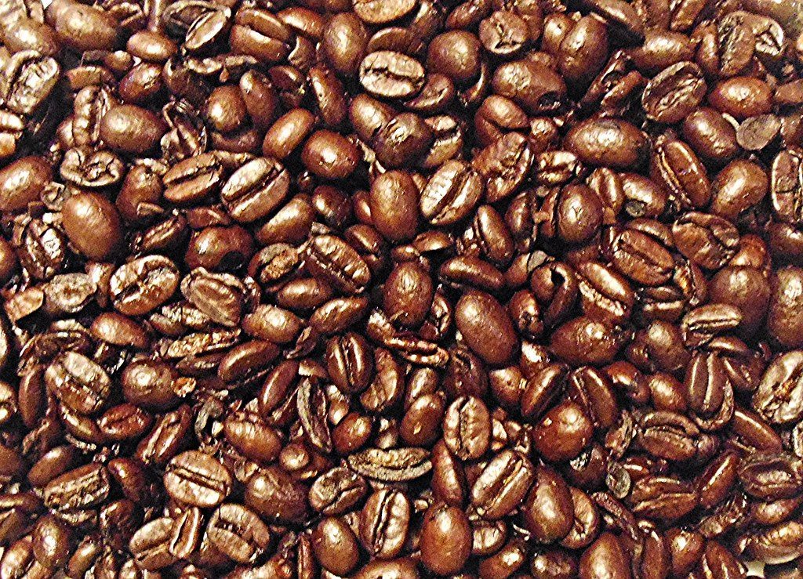
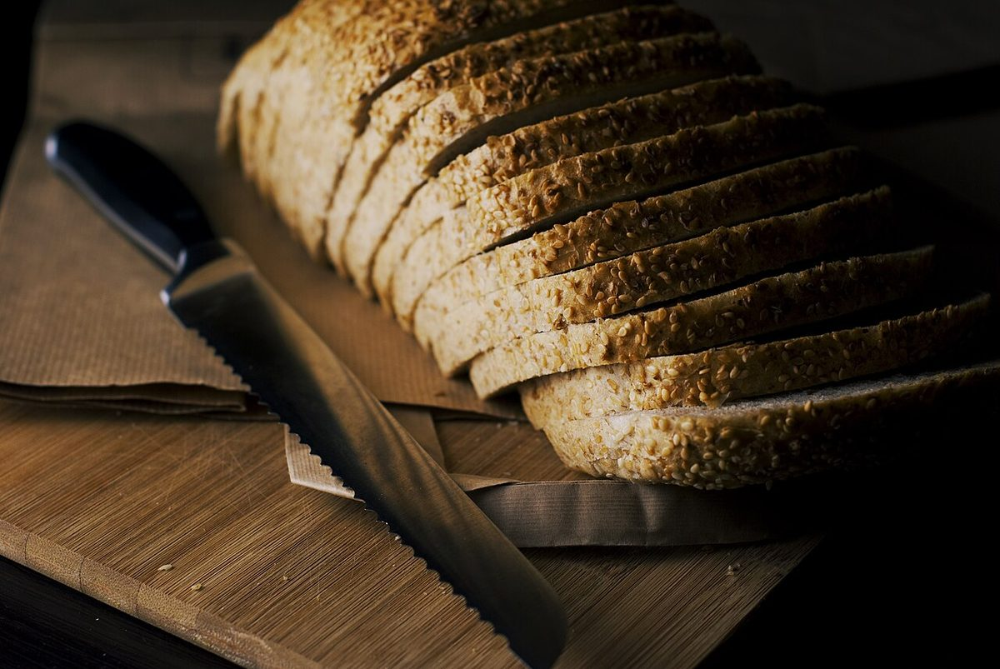

01 / 05
PROLOGUE CAFE
LOGUE CAFEカフェ ・ 香川県高松市
香川県高松市のカフェ「LOGUE CAFE」の紹介ページです。営業時間やメニューなど、詳しいことは準備中。まずはInstagramをのぞいてみてください。
制作側の連想
「LOGUE」の前に、言葉を付け替える。
店名の由来は分かりません。制作側は「LOGUE」という綴りから、プロローグ、モノローグ、カタログ、ダイアローグ、エピローグのように、頭の部分だけ入れ替わる言葉を連想しました。そこでこのサイトは、5ページの頭を付け替えていく作りにしています。制作側の連想で、お店の理念・由来とは無関係です。
イメージ(フリー素材)
道具や素材のクローズアップ
お店の写真ではありません。国外・撮影地不明のフリー素材から、物や質感だけを選びました。



